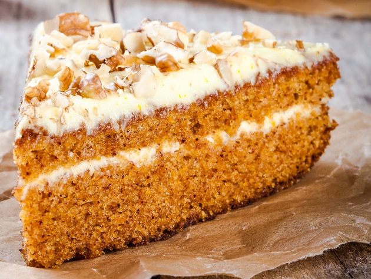

Carrot Cake Recipe

Carrot cake is cake that contains carrots mixed into the batter. Most modern carrot cake recipes have a white cream cheese frosting.
Sometimes nuts such as walnuts or pecans are added into the cake batter, as well as spices such as cinnamon, ginger and ground mixed spice.
Fruit including pineapple, raisins and shredded coconut can also be used to add a natural sweetness.
Ingredients
Cake
- 4 eggs
- 1 ¼ cups vegetable oil
- 2 cups white sugar
- 2 teaspoons vanilla extract
- 2 cups all-purpose flour
- 2 teaspoons baking soda
- 2 teaspoons baking powder
- ½ teaspoon salt
- 2 teaspoons ground cinnamon
- 3 cups grated carrots
- 1 cup chopped pecans
Frosting
- ½ cup butter, softened
- 8 ounces cream cheese, softened
- 4 cups confectioners' sugar
- 1 teaspoon vanilla extract
- 1 cup chopped pecans
Steps
- Preheat oven to 350 degrees F (175 degrees C). Grease and flour a 9x13 inch pan.
- In a large bowl, beat together eggs, oil, white sugar and 2 teaspoons vanilla.
Mix in flour, baking soda, baking powder, salt and cinnamon. Stir in carrots. Fold in pecans. Pour into prepared pan.
- Bake in the preheated oven for 40 to 50 minutes, or until a toothpick inserted into the center of the cake comes out clean.
Let cool in pan for 10 minutes, then turn out onto a wire rack and cool completely.
- To Make Frosting: In a medium bowl, combine butter, cream cheese, confectioners' sugar and 1 teaspoon vanilla.
Beat until the mixture is smooth and creamy. Stir in chopped pecans. Frost the cooled cake.